AIRBAG KOMÁRKA
Kompletní kampaň na klíč k otevřenému dni na dopadové matraci v areálu Komárka (Horní Krupka): rozhodnutí o variantě, provozní parametry s propočtem break-even, hotové texty a hlášky, reálné vizuály, logo, jednostránkový web akce, plán Facebook kampaně a harmonogram den po dni. Nic není publikováno ani odesláno — vše čeká na odsouhlasení majitele.
app.tjkrupka.cz jsou dnes nastavené
dvě nekonzistentní sady cen — konfigurace vrací dailyPriceMember 150 / dailyPriceHost 300,
zatímco produkt airbag_day má variantu pro člena 300 Kč a pro návštěvníka 600 Kč.
Před spuštěním akce je nutné sady sjednotit (požadavek na DEV níže v sekci Registrace).- Varianta C, ale bez zimního bloku. Lyžařský a snowboardový blok je z celé kampaně vyřazený — v žádném materiálu (plakát, web, FB, harmonogram, texty) po něm nezůstala stopa. Proč tam původně byl: matrace je deklarovaná i pro zimní sporty, takže měla zajistit využití investice 100 tis. Kč mimo letní sezonu. Zůstává jen jako poznámka pro další sezony, ne jako součást této akce.
- Termín potvrzen: sobota 17. 10. 2026, náhrada neděle 18. 10. 2026.
- Ceny dětí sjednoceny s dospělými: dítě i mládež platí stejně — člen 300 Kč, nečlen 600 Kč. Rodinný balíček (2+2 za 1 300 Kč) je zrušen; důvod, proč byl navržen: měl přivést rodiny jako celek se slevou proti čtyřem samostatným vstupům. Bez něj se nemění kapacita ani bezpečnostní režim, divák zůstává zdarma.
- Rozpočet: schválena placená reklama 6 000 Kč (3 fáze). Tisk 10 000 Kč schválen nebyl — plakát a leták zůstávají jako hotové soubory, v harmonogramu je u každé tiskové položky i varianta bez tisku.
- Druhá odpověď majitele (24. 9. 2026, 1:16) potvrdila variantu C i termín, ale u cen se rozešla s touto opravou — uvádí dítě 300 Kč jednotně a rodinný balíček 1 300 Kč. Rozpor je rozepsaný v sekci 14 — Protokol rozhodnutí. Materiály zatím zůstávají ve variantě bez rodinného balíčku, protože odpovídá nastavení aplikace. Spouštěcí kroky jsou v sekci 15.
Přepočítané dopady (detaily v sekcích níže): průměrná útrata na platícího 435 → 495 Kč (děti už nemají nižší cenu) · break-even akčního dne 16 → 17 platících při dobrovolnickém dozoru, 24 → 23 při placeném · výnos realistického scénáře 39 150 → 44 550 Kč · roční break-even 101 → 89 vstupů · návratnost kapitálu 1,6 → 1,2 roku · rozpočet akce 22 483 → 12 483 Kč (bez tisku) · skóre varianty C 79,6 → 75,6 (pořadí variant se nemění).
01 Rozhodnutí o variantě
První a nejdůležitější výstup. Čtyři varianty jsem ohodnotil devíti kritérii s váhami podle toho, co rozhoduje o úspěchu akce: kolik lidí reálně přijede, kolik zaplatí, jak zvládnutelné je riziko a jak často se dá akce opakovat. Čísla návštěvnosti a výnosů jsou odhady — postup výpočtu je uvedený u každé tabulky.
A) Jen MTB / downhill
- Plus: matrace je na skoky na kole dimenzovaná (10 × 5 × 2 m), komunita už v areálu jezdí (v aplikaci jsou reálné MTB tréninky), jasný brand pro trailpark.
- Plus: nejnižší riziko nepochopení formátu — „airbag pro bikery" je srozumitelné.
- Mínus: na 10 m matraci skáče jen pokročilý jezdec s vlastním dirt/enduro kolem — v regionu jde o desítky lidí, ne stovky.
- Mínus: malá skupina = prázdná akce a majetek za ~100 tis. Kč leží ladem 5 dní v týdnu.
| Odhad návštěvnosti (den) | 25–45 platících |
| Odhad výnosu (den) | 12 375–22 275 Kč |
B) Jen koloběžky
- Plus: nízký vstupní práh (koloběžku má doma skoro každé dítě), rostoucí komunita, malé nároky na výkon jezdce.
- Plus: dobrý „rodinný" obsah — přivede rodiče a sourozence.
- Mínus: koloběžkářů, kteří jezdí skoky, je v okrese řádově méně než bikerů; samostatná akce nemá čím naplnit celý den.
- Mínus: na velký nájezd pro 10 m matraci se nehodí — potřebuje vlastní malou hranu, jinak hrozí pád mimo matraci.
| Odhad návštěvnosti (den) | 10–20 platících |
| Odhad výnosu (den) | 4 950–9 900 Kč |
C) Kombinace disciplín — řízená
Kola a odrážedla v jednom dni, ale v oddělených blocích a na dvou nájezdech (malá hrana pro děti/koloběžky/BMX začátečníky, velká hrana pro MTB/dirt pokročilé). Zimní blok z varianty vypadl — rozhodnutí majitele 23. 9. 2026.
- Plus: 3–4× větší cílová skupina — bikeři + BMX + koloběžky + děti + diváci.
- Plus: jeden majetek za 100 tis. Kč pokryje čtyři disciplíny najednou — náklad na jednu disciplínu je tím nízký a matrace se využije i v běžném klubovém provozu.
- Plus: diváci zdarma = rodiny v areálu = občerstvení, merch, členská základna.
- Mínus: náročnější na dozor, bezpečnost a organizaci (víc skupin, dva nájezdy, výměna hrany mezi bloky).
- Mínus: bez jasné struktury hrozí chaos — proto je kombinace pevně rozvržená po blocích, ne „všechno najednou".
| Odhad návštěvnosti (den) | 50–90 platících + 60–120 diváků |
| Odhad výnosu (den) | 24 750–44 550 Kč |
D) Jen klubový provoz (bez veřejné akce)
- Plus: nejjednodušší bezpečnost a administrativa — jen členové, méně lidí, méně rizika.
- Mínus: nulová návštěvnost veřejnosti → nulový přímý výnos z akce, žádný marketingový efekt, žádný obsah pro FB.
- Mínus: nezaplatí ani provoz, ani obnovu majetku; nedá se na to žádat partner ani dotační výstup.
| Odhad návštěvnosti (den) | 0 platících |
| Odhad výnosu (den) | 0 Kč |
Bodové hodnocení variant (9 kritérií, váženo podle dopadu)
Vážené skóre — maximum 100 bodů
| Kritérium | Váha | A) MTB | B) Koloběžky | C) Kombinace | D) Jen klub |
|---|---|---|---|---|---|
| Velikost cílové skupiny v regionu | 15 | 4 | 2 | 5 | 2 |
| Reálná návštěvnost akčního dne | 15 | 2 | 2 | 5 | 1 |
| Výnos na akční den | 12 | 2 | 1 | 5 | 1 |
| Náročnost na bezpečnost a pojištění | 12 | 3 | 4 | 3 | 5 |
| Náročnost na obsluhu a dozor | 8 | 4 | 4 | 2 | 5 |
| Nároky na úpravu nájezdu | 8 | 4 | 3 | 2 | 3 |
| Opakovatelnost během sezony | 10 | 3 | 3 | 4 | 5 |
| Sezónní využití majetku (dny v roce, bez zimního bloku) | 10 | 2 | 2 | 3 | 4 |
| Riziko zranění a odpovědnosti | 10 | 3 | 4 | 3 | 4 |
| Vážené skóre / 100 | 100 | 58,8 | 53,2 | 75,6 | 62,2 |
Jak přesně je kombinace strukturovaná
| Blok | Čas | Kdo skáče | Nájezd | Kapacita |
|---|---|---|---|---|
| 1 · Škola skoku | 9:30–12:30 | Děti od 8 let, úplní začátečníci, koloběžky, BMX základ | malá hrana (nízká, široká) | 25 osob / blok |
| 2 · Big air | 13:30–17:00 | MTB / dirt / BMX pokročilí (skok z velké hrany do středu matrace) | velká hrana (pro 10 m matraci) | 25 osob / blok |
| Přestávka | 12:30–13:30 | — | výměna hrany + kontrola matrace + doplnění tlaku | — |
02 Název, datum a cílová skupina
Název musí fungovat na plakátě, v názvu FB události, v doméně i ve vyhledávání. Datum je zvolené podle sezóny, počasí, svátků a prázdnin, ne podle pocitu.
Název události — 5 variant
| Varianta | Proč ano / proč ne | Použitelnost v doméně |
|---|---|---|
| AIRBAG KOMÁRKA finální | Popisuje přesně to, co se děje (airbag), a kde (Komárka). Krátké, vyslovitelné, dobře se hledá („airbag komárka"), funguje na plakátě i jako název FB události, nese brand areálu. Nerozlišuje disciplínu → sedne na všechny disciplíny dne i na další termíny v sezoně. | airbagkomarka.czairbag.tjkrupka.cz |
| BIG AIR KOMÁRKA | Zní „akčněji", ale „big air" je v ČR obsazené (Big Air Kbely, snowboardové big air) → zbytečná kolize a horší dohledatelnost. | možné |
| SKOKANÁ NA KOMÁRCE | Hravé, zapamatovatelné, dobře sedí na děti. Mínus: nesděluje airbag (hlavní atrakci) a v nadpisech se hůř skloňuje. | možné |
| KOMÁRKA AIR DAY | Anglicismus — majitel výslovně chce češtinu, kde existuje český výraz. Pro místní publikum zbytečná bariéra. | ne |
| AIRBAG OPEN TJ KRUPKA | „Open" evokuje závod na body, což nechceme (chceme otevřený den pro veřejnost) a je to delší na plakát. | ne |
Datum — hlavní termín a náhrady
Cílová skupina
Návštěvník = skokan
- Věk: 12–40 let, jádro 15–25. Muži ~75 %. Doprovod dětí 8–15 let (rodič platí za dítě).
- Lokalita: dojezd do 40 minut — Krupka, Dubí, Teplice, Proboštov, Ústí n. L., Chlumec, Bílina, Litoměřice, Děčín, Jirkov.
- Zájmy: MTB/dirt/enduro, BMX, downhill, koloběžky, pumptrack, snowboard; sleduje klipy na IG/TikTok, jezdí do bikeparků.
- Ochota platit: 300–600 Kč za den skákání (odpovídá už nastaveným cenám v aplikaci), za instruktora 400–600 Kč/hod.
- Kde je online: FB skupiny (MTB Teplice/Ústecký kraj, Dirt & BMX, koloběžky ČR), IG profily lokálních jezdců a obchodů, YouTube trailparku, app.tjkrupka.cz.
Divák a doprovod
- Věk: 25–50 let (rodiče), děti 4–12 let jako doprovod.
- Lokalita: Krupka a Teplice do 15 km — akce je pro ně „výlet na půl dne", ne celodenní program.
- Motivace: podívaná (skoky, exhibice), bezpečné vyzkoušení pro dítě, občerstvení v areálu, chata/penzion jako zázemí.
- Ochota platit: 0 Kč za vstup, ale utrácí za občerstvení a merch — odhad 80–200 Kč za doprovod.
- Kde je online: FB skupiny města Krupka a Teplice, maminky/děti z Teplic, akce v regionu na FB.
Dojezdová zóna a reálná velikost publika
| Krupka (město akce) | 12 793 |
| Teplice (město, 10 km) | 46 477 |
| okres Teplice (do 25 km) | 127 739 |
| Ústecký kraj (do 60 km) | 808 356 |
| Reálný dosah akce (odhad) | 200–400 tis. lidí |
Počty obyvatel jsou oficiální údaje ČSÚ k 1. 1. 2025 (město Krupka, město Teplice, okres Teplice, kraj). „Reálný dosah" je odhad zúžený na domácnosti s aktivním sportovcem nebo dítětem v dojezdu 40 minut — odhad, ne měření.
03 Provozní hodiny, ceny a break-even
Ceny jsou potvrzené majitelem 23. 9. 2026 a vychází z toho, co je už nastavené v aplikaci (člen 300 Kč / nečlen 600 Kč, platnost vstupu 4 hodiny). Děti a mládež platí stejně jako dospělí (člen 300 Kč, nečlen 600 Kč), rodinný balíček byl zrušen. Divák a doprovod jsou zdarma. Pozor: majitel 24. 9. 2026 poslal druhou odpověď, která uvádí dítě 300 Kč jednotně a rodinný balíček 1 300 Kč — rozpor i dopad obou variant je v sekci 14. Do rozhodnutí platí tato tabulka, protože odpovídá nastavení aplikace. Ke každé ceně je spočítaný break-even.
Otevírací doba
| Den | Režim | Airbag v provozu | Registrace / zázemí | Dozor |
|---|---|---|---|---|
| so 17. 10. 2026 (den akce) | otevřený den pro veřejnost | 9:30–12:30 a 13:30–17:00 | 9:00–17:00 | 3 osoby + zdravotník |
| ne 18. 10. 2026 (náhrada) | stejný režim, pokud se v sobotu nejede | 9:30–12:30 / 13:30–17:00 | 9:00–17:00 | 3 osoby |
| so + ne, běžný víkend | provoz po akci (členové + veřejnost) | 10:00–12:30 / 13:30–16:30 | 10:00–16:00 | 2 osoby |
| st (letní čas, kvě–září) | členský trénink | 16:00–19:00 | 15:45–19:00 | 2 osoby |
Ceník — den akce
| Kategorie | Cena | Co zahrnuje | Stav v aplikaci |
|---|---|---|---|
| Člen TJ Krupka — celý den | 300 Kč | oba bloky, dozor, instruktáž, pojištění akce | v aplikaci nastaveno |
| Návštěvník — denní vstup | 600 Kč | oba bloky, dozor, instruktáž, pojištění; platnost vstupu 4 h | v aplikaci nastaveno |
| Dítě a mládež do 18 let (s doprovodem) | 300 / 600 Kč | stejná cena jako dospělí — člen 300 Kč, nečlen 600 Kč (rozhodnutí majitele 23. 9. 2026); dopolední blok a malá hrana, doprovod u matrace | cena sjednocena, nová varianta se nezavádí |
| Akční cena dne akce (návrh, neschváleno) | 250 / 450 Kč | člen / nečlen, jen pro 17. 10. 2026 — sleva má motivovat k registraci předem; k potvrzení majitelem | schválit slevu + doplnit (DEV) |
| Rodinné (2 dospělí + 2 děti) | zrušeno | majitel 23. 9. 2026: rodinný balíček se nepoužije, každý platí svůj vstup (dítě stejně jako dospělý). Druhá odpověď majitele (24. 9.) balíček 1 300 Kč znovu uvádí — rozpor viz sekce 14 | vyřazeno |
| Doprovod / divák | zdarma | přístup do areálu, občerstvení, exhibice | bez registrace |
| Členství TJ Krupka (roční) | 200 Kč | členská cena vstupů, členská karta s QR, hromadné úrazové pojištění | v aplikaci nastaveno |
Náklady a break-even
| Kapitálové náklady (odhad) | Kč |
|---|---|
| Airbag 10 × 5 × 2 m vč. potisku a dodání | 100 000 |
| Dva nájezdy — malá a velká hrana, zemní úprava dopadu | 45 000 |
| Zázemí: kotvení, značení, cedule, lékárnička, osvětlení | 15 000 |
| Celkem | 160 000 |
| Amortizace na 7 let (rezerva na obnovu) | 22 857 / rok |
Cena airbagu 100 000 Kč je fakt z podkladů projektu. Nájezdy a zázemí jsou odhady — je nutné je ověřit podle skutečné konstrukce a terénu. Pokud byla na airbag schválena dotace (ÚK Sport2025), kapitálová návratnost se úměrně zkracuje.
| Roční provozní náklady (odhad) | Kč / rok |
|---|---|
| Pojištění odpovědnosti spolku | 6 000 |
| Servis, záplaty, ventily, dmychadlo | 6 000 |
| Revize a odborná kontrola matrace | 3 000 |
| Marketing mimo akční dny | 6 000 |
| Rezerva na obnovu (amortizace) | 22 857 |
| Fixní náklady celkem | 43 857 |
| Náklad jednoho akčního dne | Dobrovolníci | Placený dozor |
|---|---|---|
| Personál (3 osoby × 8 h) | 1 500 | 4 800 |
| Elektřina dmychadlo (1,6 kW × 8 h × 6,5 Kč) | 83 | 83 |
| Materiál, spotřeba, doplňky | 400 | 400 |
| Propagace — celá schválená kampaň (3 fáze, 6 000 Kč) | 6 000 | 6 000 |
| Náklad launch dne | 7 983 | 11 283 |
| Break-even (při 495 Kč / platící) | 17 platících | 23 platících |
| Break-even běžného dne (propagace 800 Kč) | 6 platících | 13 platících |
| Kdyby majitel schválil akční slevu (250 / 450 Kč → průměr 380 Kč) | 21 platících | 30 platících |
Výnos akčního dne podle účasti — varianty odhadu (mix 495 Kč / platící)
Roční model — zaplatí se majetek?
| Scénář | Akčních dnů / rok | Platících / den | Výnos ze vstupů | Fixní náklady | Výsledek | Návratnost 160 tis. Kč |
|---|---|---|---|---|---|---|
| Konzervativní | 8 | 20 | 79 200 | 43 857 | +35 343 | 4,5 roku |
| Realistický | 10 | 35 | 173 250 | 43 857 | +129 393 | 1,2 roku |
| Optimistický | 10 | 55 | 272 250 | 43 857 | +228 393 | 0,7 roku |
| Roční break-even bez dotace a bez partnerů | 89 platících / rok | 43 857 | — | 0 | ≈ 9 dnů × 10 lidí | |
04 Registrace přes app.tjkrupka.cz
Popis vychází z reálného stavu aplikace ke dni 21. 9. 2026 (kontrolováno přes veřejné API aplikace) — ne z představy, jak by to mohlo být. Na konci je seznam toho, co je potřeba v aplikaci doplnit, aby den akce prošel bez improvizace.
Jak to udělá uživatel — krok za krokem
- Otevře app.tjkrupka.cz na mobilu (je to webová aplikace, jde „přidat na plochu", nic se neinstaluje z obchodu).
- Registrace — jméno, příjmení, datum narození, e-mail, telefon. Podle data narození se vybere kategorie: dítě do 15 let / mládež 15–18 / dospělý 18+. (v aplikaci nastaveno)
- Souhlasy — v aplikaci jsou připravené dokumenty, bez nichž nejde zaplatit ani rezervovat: provozní řád · čestné prohlášení o zdravotní způsobilosti · vzdání se práva na náhradu újmy (§ 2925 OZ) · GDPR. Každý souhlas se ukládá s časovým razítkem a otiskem verze dokumentu. (verze 1, platné od 15. 8. 2026)
- Nezletilí — rodič dostane odkaz a potvrdí souhlas zákonného zástupce zvlášť (bez toho registrace neprojde).
- Platba — kartou přímo v aplikaci (platební brána Stripe je nastavená v ostrém režimu). Na výběr: jednorázový vstup AIRBAG, nebo členství TJ Krupka a pak levnější členský vstup.
- QR členská karta — v aplikaci vznikne karta s QR kódem. Tu ukáže (nebo nechá naskenovat) dozorci na místě.
- Rezervace bloku — vybere blok (dopolední Škola skoku / odpolední Big air) podle volných míst.
- Na místě — dozor naskenuje QR kód, potvrdí příchod a vydá pásku s číslem do rotace.
Co už aplikace umí (zjistěno dnes z reálného API)
- Produkt „Jednorázový vstup — AIRBAG" s jednotkou den a platností vstupu 4 hodiny; dvě cenové varianty (člen / veřejnost).
- Zařízení „Dopadová matrace" (airbag) zavedené v katalogu zařízení.
- Události s kapacitou a počtem volných míst — v aplikaci už běží reálné MTB tréninky (např. 24. 9. 2026, kapacita 12; 28. 9. 2026, kapacita 8; soustředění mládeže 5.–6. 10. 2026, kapacita 20).
- Souhlasy a dokumenty s verzí a otiskem — vzdání se práva, čestné prohlášení, souhlas zákonného zástupce.
- QR členská karta a kontrola karty na místě (dozor), přehled členů a statistiky pro vedení spolku.
- Platba kartou (Stripe v ostrém režimu) a doklady k platbám.
Požadavky na úpravu aplikace před akcí (zadání pro DEV)
| # | Co je potřeba | Proč | Náročnost |
|---|---|---|---|
| 1 | Sjednotit ceny — konfigurace vrací člen 150 / host 300 Kč, ale produkt má 300 / 600 Kč | Kdo se podívá do aplikace, uvidí jinou cenu než na plakátu → ztráta důvěry a stížnosti na místě | nutné, malé |
| 2 | Nová cenová varianta „den akce" (člen 250 / nečlen 450 Kč), platná jen 17. 10. 2026 — jen pokud majitel slevu schválí | Akční cena je nástroj, jak dostat lidi k registraci předem; bez schválení slevy se tento bod neřeší | střední (podmíněné) |
| 3 | Označení dětské a mládežnické kategorie u vstupu — dítě i mládež platí stejně jako dospělí (člen 300 / nečlen 600 Kč); nová cenová varianta se nezavádí | Majitel 23. 9. 2026 rozhodl, že děti mají stejnou cenu jako dospělí — stačí ponechat stávající varianty a hlídat věkovou hranici v souhlasu zákonného zástupce | rychlé — zjednodušeno |
| 4 | Dva bloky jako dvě události s kapacitou 20 na 17. 10. 2026 (+ na náhradní termíny) | Kapacita je v aplikaci vedená po událostech, ne po dnech — jinak nelze ohlídat počet lidí v bloku | rychlé |
| 5 | Stránka „AIRBAG KOMÁRKA" v aplikaci s odkazem na web akce a s vysvětlením, co si vzít | Uživatel přichází z FB na web akce a musí jedním klikem skončit v registraci | rychlé |
| 6 | Offline kontrola QR karet + export seznamu přihlášených (CSV/PDF pro tisk) | V areálu je slabý signál; papírový seznam je záložní řešení, když aplikace nenaběhne | střední |
| 7 | Připomínka 24 hodin před akcí (e-mail / notifikace s QR kartou a harmonogramem dne) | Snižuje počet lidí, kteří se zaregistrují a nedorazí | rychlé |
| 8 | Ověřit právní režim jednorázového vstupu pro veřejnost | Podle interního právního rozboru projektu je prodej vstupu veřejnosti hraniční s živnostenským režimem (členský model je bezpečnější) | LEGAL |
| 9 | Pojištění jednorázové akce pro veřejnost (navíc k pojištění spolku) | Krytí musí platit i pro nečleny na jednorázové akci | LEGAL / pojistitel |
| 10 | Zdroj registrace (odkud člověk přišel: FB událost / reklama / plakát / školy) | Bez toho nelze vyhodnotit, který kanál fungoval — jediné měřitelné kritérium kampaně | střední |
05 Kapacita, bezpečnost a odpovědnost
Airbag je rizikové sportoviště. Následující parametry jsou navržené tak, aby provoz obstál při kontrole i při řešení úrazu — a aby se dal obhájit u pojišťovny.
Povinná výbava jezdce
- Celoobličejová přilba (fullface) — u velké hrany bez výjimky.
- Chránič páteře a chrániče kolen a loktů.
- Rukavice a pevná obuv; doporučen chránič krku a brýle.
- Bez výbavy se neskáče — dozor kontroluje před vstupem do rotace. V areálu bude půjčovna/půjčka základní výbavy (ve spolupráci s Decathlonem) — k odsouhlasení.
Co provozní řád zakazuje
- Více osob na matraci současně, skoky mimo osu matrace, skoky z boku.
- Provoz při větru nad 25 km/h, na mokré matraci, za deště, sněžení, námrazy a za snížené viditelnosti.
- Účast pod vlivem alkoholu, drog nebo léků snižujících pozornost; v těhotenství; po úrazu hlavy či páteře.
- Salta a rizikové triky bez předchozího souhlasu dozoru (povolené jen v řízeném bloku s instruktorem).
Co účastník podepisuje (digitálně v aplikaci)
| Dokument | Kryje | U nezletilých | Stav |
|---|---|---|---|
| Provozní řád zařízení | pravidla provozu, povinnosti uživatele, dozor, kontroly | — | v aplikaci jako součást souhlasů |
| Čestné prohlášení o zdravotní způsobilosti | vylučuje účast při onemocnění a po úrazech | — | v aplikaci, verze 1 |
| Vzdání se práva na náhradu újmy (§ 2925 OZ) | typická rizika sportu; nekryje zanedbání povinností provozovatele | — | v aplikaci, verze 1 |
| GDPR — zpracování osobních údajů | evidence členů, plateb, souhlasů | — | v aplikaci |
| Souhlas zákonného zástupce | účast nezletilého, odpovědnost rodiče | povinný do 18 let | v aplikaci (potvrzuje rodič) |
| Pojištění odpovědnosti spolku | škody způsobené provozem (zanedbaná údržba, chybějící dozor) | — | ověřit limit a platnost smlouvy |
| Jednorázové pojištění akce pro veřejnost | nečlenové na jednorázové akci | — | nutno sjednat / ověřit u pojistitele |
06 Propagační materiály a hlášky
Všechno je hotové copy — stačí zkopírovat do tisku, na web nebo do příspěvku. Nic z toho není publikované ani nikam odeslané.
Hlášky a krátké texty pro příspěvky — 31 hotových
Fáze 1 — teaser
Fáze 2 — spuštění
Fáze 3 — poslední výzva
Fáze 4 — den akce
Fáze 5 — poděkování
Pravidla pro použití hlášek
- Hlášky s poznámkou doplň reálný počet se nesmí zveřejnit s vymyšleným číslem — vždy dosadit skutečný stav z aplikace.
- Nikde neslibovat „bez rizika úrazu". Airbag snižuje riziko, neodstraňuje ho. Proto je claim „skákej bez rizika" vedený jako pozvánka, ne jako garance.
- Do příspěvků vždy jeden odkaz: web akce nebo událost na FB (ne obojí, ne tři).
Tiskoviny — hotová textace
Plakát A3 / A2
Rozměry: A3 297 × 420 mm, A2 420 × 594 mm. Hotový layout je v souboru
obrazky/plakat-a3-300dpi.png (300 dpi). QR kód v plakátu vede na registraci.
Leták A5 (do škol, obchodů, na bikeshopy)
Layout: obrazky/letak-a5-300dpi.png. Doplnit: logo partnerů, adresa areálu, QR na registraci.
Plakát na místě konání (navigační, A4)
Cedule k airbagu — 3 kusy
Roll-up 100 × 200 cm
Umístění: u vstupu do areálu a u registrace. Stejná textace se dá použít na banner 300 × 100 cm nad dopadovou zónu.
Tisková zpráva (k odeslání až po schválení)
Pozvánka pro školy
Pozvánka pro místní spolky a komunity
Text pro partnery a sponzory
07 Obrázky pro události a příspěvky
Všechny obrázky jsou skutečné soubory na disku ve složce obrazky/ — vygenerované z reálné fotografie
airbagu a z reálných podkladů areálu, v předepsaných rozměrech. Otevři kterýkoli z nich a uvidíš přesně to, co je níže v náhledech.
foto-airbag-realny.jpg, 1600 × 628 px),
mapa areálu Komárka (foto-mapa-arealu.png), logo trailparku (foto-logo-trailpark.png).
Fotky z akcí a ze svahu v podkladech majitele k dispozici nejsou — jsou potřeba od majitele (viz seznam k odsouhlasení).
Do vizuálů jsem proto použil výrobní fotografii airbagu s potiskem, převedenou do dvoubarevného (duotone) provedení.
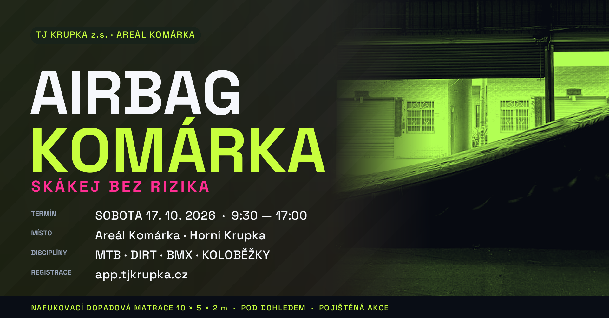
1920 × 1005 px ·
obrazky/fb-event-cover-1920x1005.png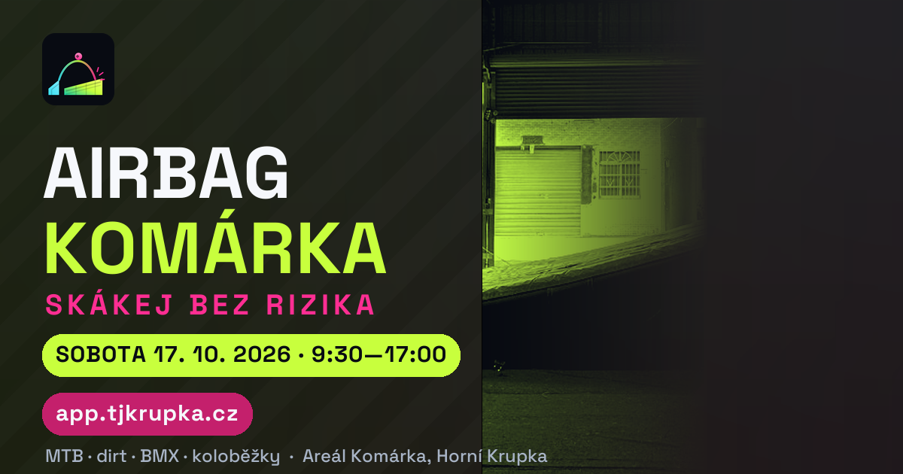
1200 × 630 px ·
obrazky/fb-post-1200x630.png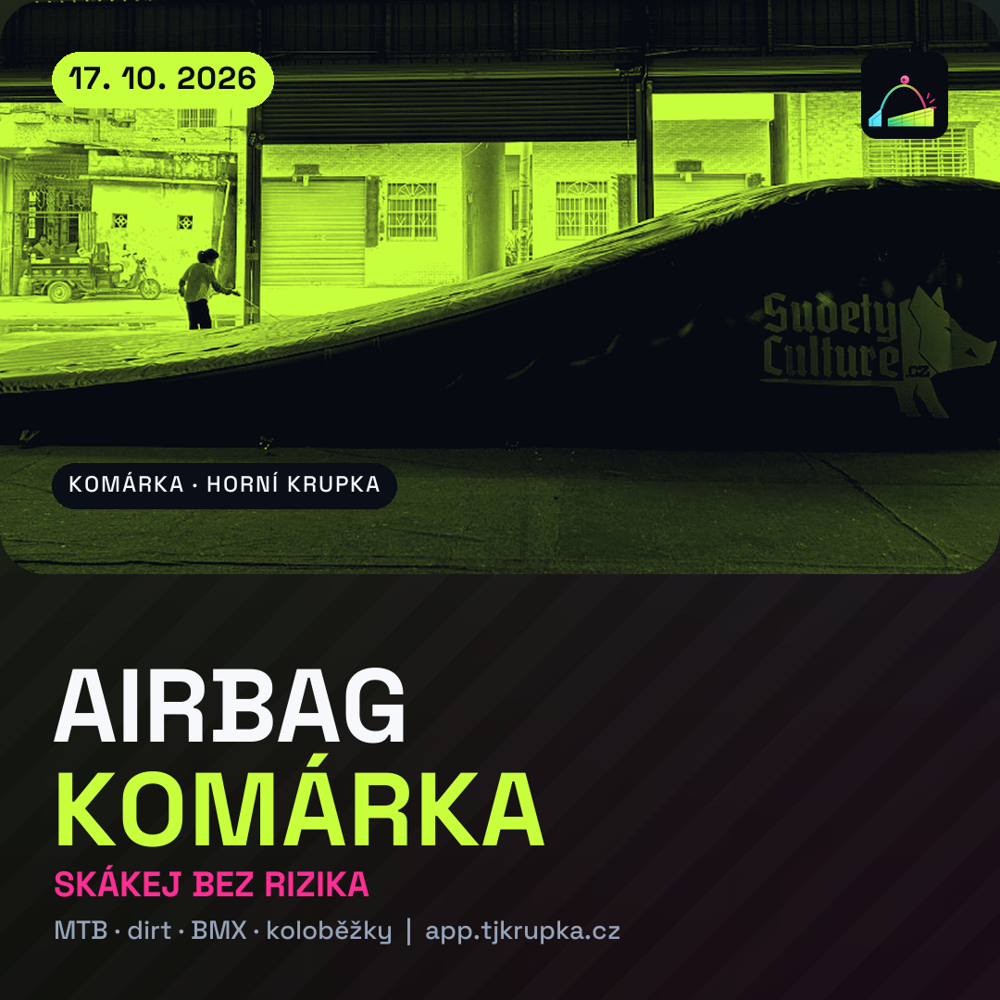
1080 × 1080 px ·
obrazky/ig-ctverec-1080x1080.png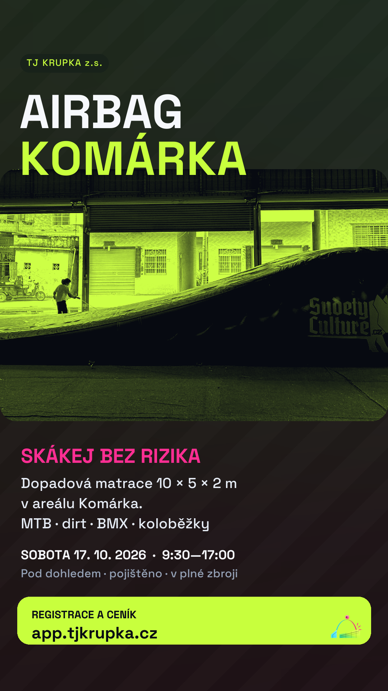
1080 × 1920 px ·
obrazky/ig-story-1080x1920.png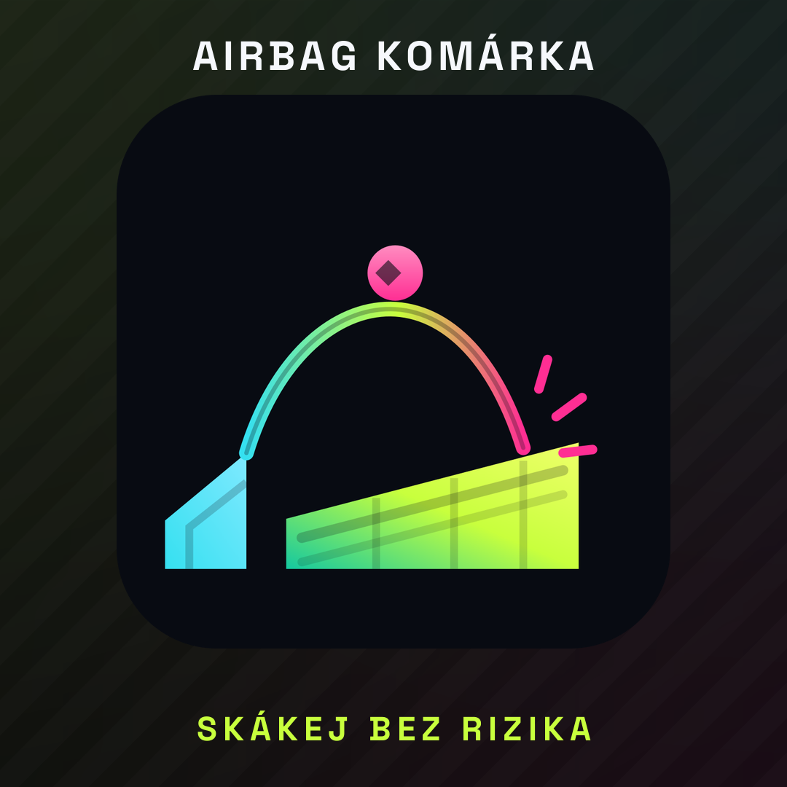
1080 × 1080 px ·
obrazky/profilovka-1080x1080.png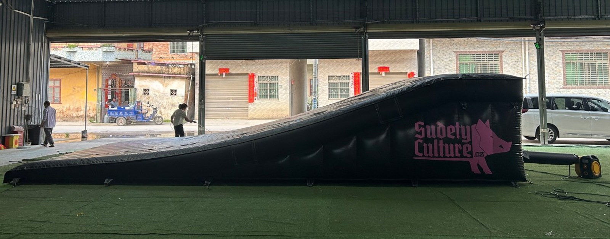
výrobní foto, 1600 × 628 px ·
obrazky/foto-airbag-realny.jpgTiskoviny a zdrojové podklady — skutečné soubory na disku
Plakát A3 (3508 × 4961 px, 300 DPI) i leták A5 (1748 × 2480 px, 300 DPI) jsou hotové k tisku — otevři soubor a vytiskni,
nic se nedoplňuje. Pozor: rozpočet na tisk nebyl schválen (majitel 23. 9. 2026 uvolnil jen reklamu 6 000 Kč) — viz varianty A/B v sekci Vyhodnocení a Harmonogram.
Mapa areálu a logo trailparku jsou reálné podklady majitele, ze kterých vychází umístění airbagu a vizuální identita akce.
QR kód byl ověřen čtením (dekódováno na https://app.tjkrupka.cz/), takže na plakátu opravdu vede na registraci.
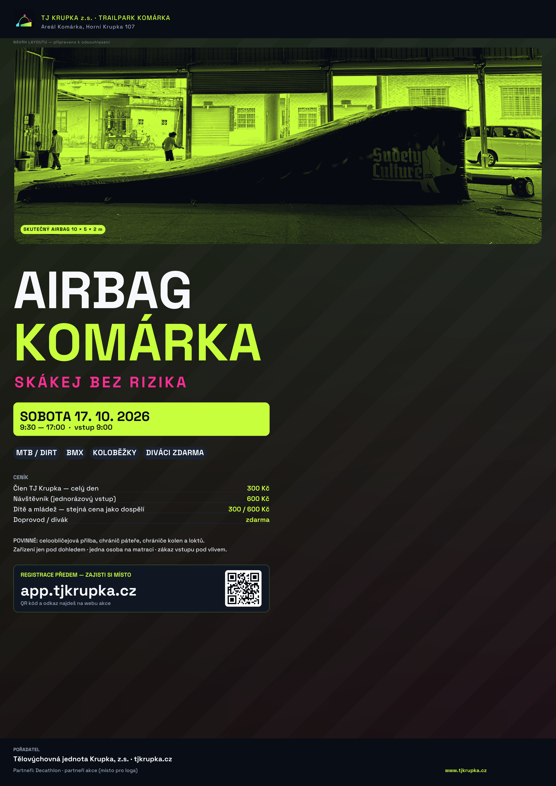
3508 × 4961 px · 300 DPI · stáhnout PNG

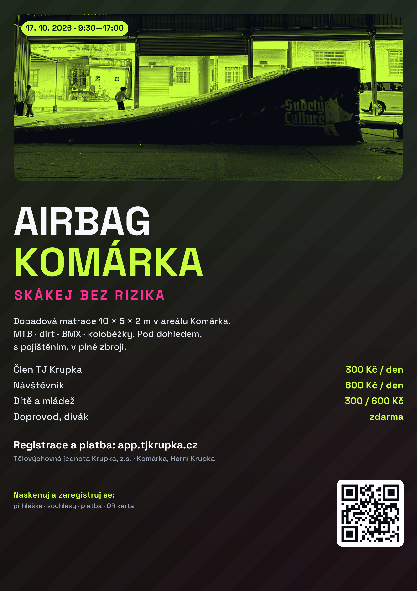
1748 × 2480 px · 300 DPI · stáhnout PNG

600 × 600 px · dekódováno na
https://app.tjkrupka.cz/ · stáhnout PNG
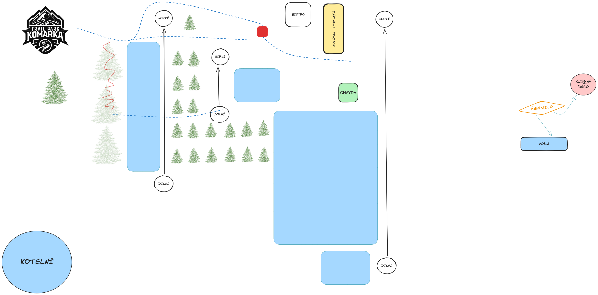
3044 × 1505 px · stáhnout PNG

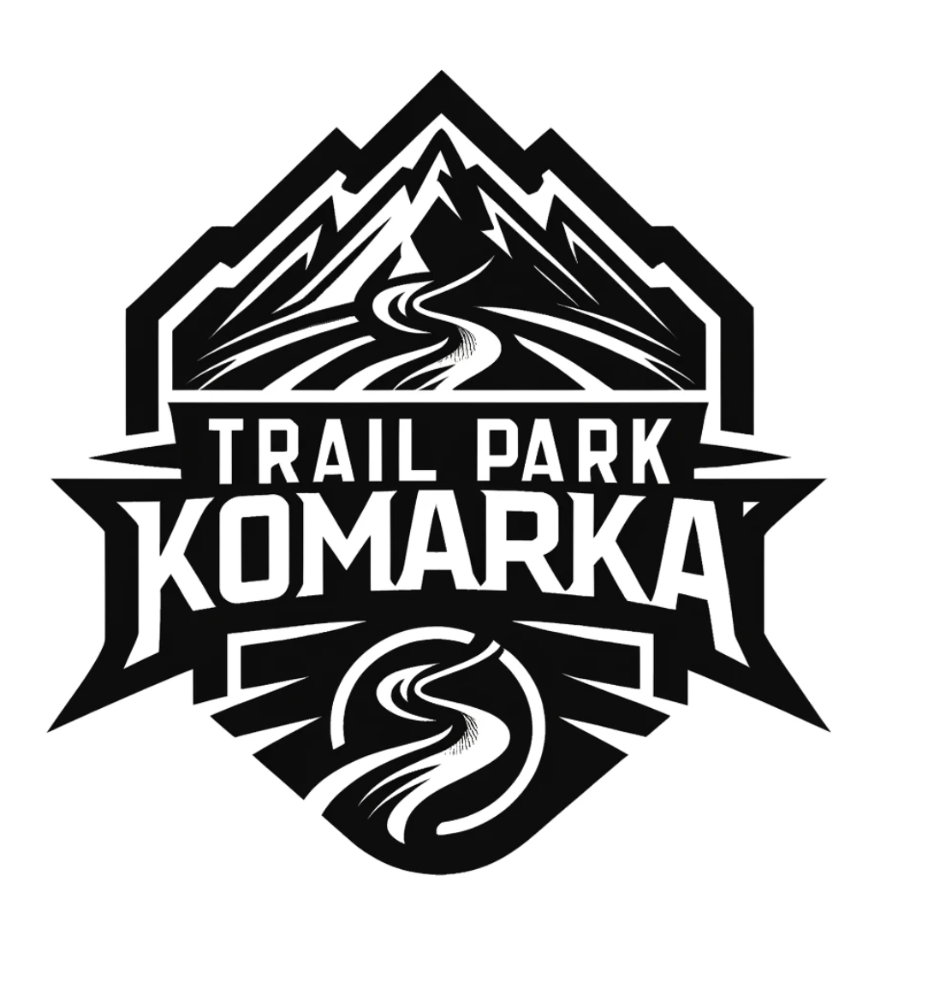
1098 × 1168 px · stáhnout PNG

Zadání obrázků — co kde má být a proč
| Formát | Rozměr | Obsah a text | Poznámka k použití |
|---|---|---|---|
| FB událost — cover | 1920 × 1005 | Vlevo nahoře název AIRBAG KOMÁRKA, pod ním claim „SKÁKEJ BEZ RIZIKA", blok s termínem, místem, disciplínami a registrací; vpravo reálná fotografie airbagu v limetkovém duotonu; spodní pruh s parametry matrace. | Klíčový text držím ve středním pásu — FB ořezává cover v různých zobrazeních a okraje se ztrácejí. |
| FB příspěvek | 1200 × 630 | Vlevo text (název, claim, dvě řádky popisu, dvě tlačítkové lišty: termín + adresa registrace), vpravo fotografie airbagu. | Používá se jako obrázek odkazu na web akce i jako samostatný příspěvek. |
| IG čtverec | 1080 × 1080 | Foto airbagu nahoře, dole název, claim, disciplíny a adresa aplikace; vlevo nahoře datum v limetkovém štítku. | Jádro profilu — funguje i jako náhledový obrázek v mřížce. |
| Story (IG/FB) | 1080 × 1920 | Nahoře název, uprostřed foto, dole claim, termín a limetková lišta „REGISTRACE A CENÍK / app.tjkrupka.cz". | Dole je vynechaný pruh pro nálepku s odkazem a anketou — nepřekrývá se s ovládacími prvky. |
| Profilová fotka | 1080 × 1080 | Znak kampaně na tmavém podkladu, nad ním a pod ním název a claim. | V kruhovém ořezu FB zůstává znak ve středu — testováno v malém provedení. |
| Plakát A3/A2 | 3508 × 4961 (300 dpi) | Kompletní plakát: název, termín, disciplíny, ceník, povinná výbava, QR na registraci, partneři. | V souboru je vidět i nápis „návrh layoutu" — před tiskem se odstraní. |
| Leták A5 | 1748 × 2480 (300 dpi) | Zkrácená verze pro školy, obchody a bikeshopy + QR kód. | Doplnit loga partnerů a adresu areálu. |
| QR kód | 600 × 600 | QR na app.tjkrupka.cz — funkční, ověřeno načtením. | Používá se na plakátu, letáku, cedulích i roll-upu. |
08 Plán Facebook kampaně
Organická část + placená část s konkrétním cílením, rozpočtem a fázemi. Všechno je připravené k nastavení — nic není spuštěné a žádný rozpočet není utracený.
A) Založení stránky (návrh k odsouhlasení)
Identita stránky
| Název stránky | AIRBAG KOMÁRKA |
| Uživatelské jméno | @airbagkomarka (záloha @airbag.komarka) |
| Kategorie | Sportovní akce · Sportovní a rekreační zařízení · Sportovní tým |
| Alternativa | Pokud majitel nechce samostatnou stránku, dá se akce vést pod stránkou TJ Krupka / Komárka — pak se ale hůř měří dosah akce a míchá se publikum. |
| Popis (krátký) | Dopadová matrace v areálu Komárka v Horní Krupce. MTB · dirt · BMX · koloběžky. Otevřené dny a tréninky pro veřejnost. Pořádá Tělovýchovná jednota Krupka, z.s. |
| Kontakt | tjkrupka.cz · app.tjkrupka.cz · telefon spolku |
Vizuály a prvních 5 příspěvků
- Profilovka:
obrazky/profilovka-1080x1080.png· Cover:obrazky/fb-event-cover-1920x1005.png - 1. Teaser: výrobní foto airbagu + „Něco velkého se staví na Komárce."
- 2. Oznámení termínu: plakátový obrázek + odkaz na FB událost.
- 3. „Jak to funguje": 4 obrázky/videoklip z registrace v aplikaci (krok za krokem).
- 4. Bezpečnost a výbava: co je povinné + půjčení chráničů (odkaz na partnera).
- 5. Program dne a bloky (dopoledne děti, odpoledne big air) + CTA na registraci.
FB událost — nastavení
| Název | AIRBAG KOMÁRKA — otevřený den na dopadové matraci |
| Kdy | sobota 17. 10. 2026, 9:30–17:00 (náhradní termín neděle 18. 10. 2026) |
| Kde | Areál Komárka, Horní Krupka 107, 417 41 Krupka (vstup u základny, parkování u základny) |
| Popis | 10 metrů dlouhá dopadová matrace. MTB · dirt · BMX · koloběžky. Dopoledne Škola skoku pro děti a začátečníky, odpoledne Big air pro pokročilé. Diváci a doprovod zdarma. Povinná přilba a chrániče. Registrace předem v aplikaci (odkaz) — na místě do naplnění kapacity. Provoz pod dohledem instruktorů, akce je pojištěná. |
| Typ | Veřejná událost · bez placení vstupu na FB (platí se v aplikaci) |
| Cover | obrazky/fb-event-cover-1920x1005.png |
| Koordinátoři | Miroslav Brožek + určený dozor akce (viditelné pro tým) |
B) Placená kampaň — nastavení, cílení a rozpočet
| Fáze | Termín | Cíl | Cílení | Rozpočet | Denní limit |
|---|---|---|---|---|---|
| 1 · Povědomí | 2.–7. 10. 2026 | Lidé v okolí vědí, že se něco děje (prokliky na událost) | Okruh 20 km od Krupky · 18–45 let · zájmy: horská kola, BMX, koloběžky, snowboard, pumptrack · vyloučit: nesportovní publikum | 1 500 Kč | 250 Kč |
| 2 · Konverze | 8.–14. 10. 2026 | Registrace do aplikace (klik na web akce → app.tjkrupka.cz) | Stejné publikum + podobné publikum (1 %) z návštěvníků webu a lidí, kteří reagovali na událost · 15–45 let · rodiče dětí 8–15 let (zájmy: rodinné výlety, kola, lyžování) | 3 000 Kč | 430 Kč |
| 3 · Retargeting + poslední výzva | 15.–17. 10. 2026 | Dokončení registrace u lidí, kteří zaváhali | Všichni, kdo navštívili web akce nebo interagovali s událostí a nedokončili registraci (vlastní publikum z webu a FB) · 18–45 let · okruh 25 km | 1 500 Kč | 500 Kč |
| Celkem placená kampaň | 6 000 Kč | — | |||
Konkrétní nastavení reklam
- Umístění: ručně — FB feed, IG feed, IG story, FB reels. Vypnout Audience Network a Messenger (nekvalitní prokliky).
- Formáty: statický obrázek (funguje na dosah i prokliky), krátké video 10–15 s z airbagu (nejsilnější formát, ale není z čeho sestříhat → potřeba natočit na prvním tréninku).
- Věk: 18–45 let jádro; rodiče dětí 30–50 let v cílení fáze 2.
- Lokace: Krupka, Teplice, Dubí, Proboštov, Chlumec, Ústí nad Labem, Bílina, Litoměřice, Děčín — nebo okruh 20–25 km od souřadnic areálu (jednodušší a spolehlivější).
- Zájmy (přesné názvy v Ads Manageru): Mountain biking, Downhill mountain biking, BMX, Freeride, Scooter, Pump track, Snowboarding, Skiing, Decathlon, Cyklistika. Lyžování a snowboard jsou v cílení záměrně — jezdí je stejní lidé (Komárka je v zimě ski areál). Nejde o zimní blok; když je majitel nechce, vyřadí se jedním klikem.
- Cíl kampaně: fáze 1 „Povědomí/Dosah", fáze 2 „Prokliky na web" (optimalizace na proklik), fáze 3 „Prokliky na web". Konverzní cíl na registraci zatím nastavit nelze — aplikace nemá měřicí piksel.
- Vyloučení: lidé, kteří se už zaregistrovali (vlastní publikum z e-mailů), a osoby pod 18 let bez rodičovského publika.
Měření — co nastavit, aby se dalo vyhodnotit
- UTM odkazy na všechno mimo FB (web akce, aplikace, plakát s QR):
utm_source= fb / ig / plakat / skoly,utm_medium,utm_campaign=airbag-komarka-2026-10. - Zdroj registrace v aplikaci (požadavek na DEV, bod 10) — jinak se nikdy nedozvíme, který kanál přivedl platícího člověka.
- FB událost: počet odpovědí „zúčastním se" vs. skutečná účast (porovnat s reálným počtem na místě).
- Statistiky stránky: dosah, prokliky, nejlepší příspěvek podle uložení a sdílení.
- Vyhodnocení na místě: u registrace otázka „odkud jste se o akci dozvěděli?" (5 možností) — ukáže rozdíl mezi reklamou, školou, plakátem a doporučením.
- Výstup: jedna tabulka náklady vs. registrace vs. výnos pro každý kanál; vyhodnocení do 3 dnů po akci.
09 Web akce — jednostránkový web
Hotová funkční stránka na jednom místě: web/index.html. Otevři ji v prohlížeči — žádné placeholdery,
veškeré texty jsou hotové. Primární cíl stránky je jediný: dostat člověka do registrace v app.tjkrupka.cz.
airbag-komarka-kampan/web/index.html
| # | Sekce | OBSAH (hotové copy) | CTA |
|---|---|---|---|
| 1 | Hero | Název, claim „Skákej bez rizika", termín, místo, dvě tlačítka (Registrace / Program dne), tři klíčové údaje: 10 m matrace, 2 hrany, diváci zdarma. | Registrace |
| 2 | Co je airbag | Vysvětlení co to je, jak funguje, k čemu slouží; parametry 10 × 5 × 2 m; reálná fotografie airbagu. | Chci to zkusit |
| 3 | Program dne | Blok 1 (9:30–12:30) Škola skoku, Blok 2 (13:30–17:00) Big air, přestávka 12:30–13:30; co se v kterém bloku děje a pro koho je. | Rezervovat blok |
| 4 | Disciplíny | MTB/enduro/dirt, BMX, koloběžky, děti — u každé co je potřeba umět a co se dá zkusit. Vysvětlení, proč ne inline a ne skateboard. | — |
| 5 | Ceník | Člen 300 Kč, nečlen 600 Kč (děti a mládež stejná cena jako dospělí), diváci zdarma, členství 200 Kč/rok; poznámka, že registrace předem jistí místo v bloku. | Registrace |
| 6 | Bezpečnost | Povinná výbava, pravidla provozu, dozor, pojištění, co podepisuješ; kontakt na dozor; pravidlo větru a mokrého povrchu. | Přečíst provozní řád |
| 7 | Registrace — 4 kroky | Krok za krokem: registrace → souhlasy → platba → QR karta; s upozorněním na souhlas rodiče u nezletilých. | app.tjkrupka.cz |
| 8 | Jak se dostat | Adresa, parkování u základny, pěší cesta k airbagu, MHD; odkaz na mapu; zázemí (chata, bistro, WC). | Otevřít v mapě |
| 9 | Časté dotazy | 6 otázek: Umím špatně skákat, můžu přijít? / Co když bude pršet? / Mám vlastní kolo? / Jak je to s dětmi? / Dá se zaplatit na místě? / Můžu jen koukat? | — |
| 10 | Partneři + patička | Místo pro loga partnerů, pořadatel Tělovýchovná jednota Krupka, z.s., kontakty, odkaz na tjkrupka.cz a app.tjkrupka.cz. | Kontakt |
web/index.html):
Pokud se náhled nezobrazí (prohlížeč blokuje rámce u souborů otevřených přes file://),
otevři stránku přímo: web/index.html.
airbag.tjkrupka.cz nebo sekci na tjkrupka.cz/airbag —
bez nové domény, bez dalších nákladů, se zachováním brandu. Alternativa pro samostatnou kampaň: airbagkomarka.cz.
Nasazení je technická akce (DEV) a vyžaduje schválení — připravený soubor čeká na pokyn.
10 Logo události
Vektorová podoba (SVG) + PNG exporty pro profilovku, plakát i tisk. Znak funguje v malém (profilovka 64 px) i velkém (plakát A2) provedení.
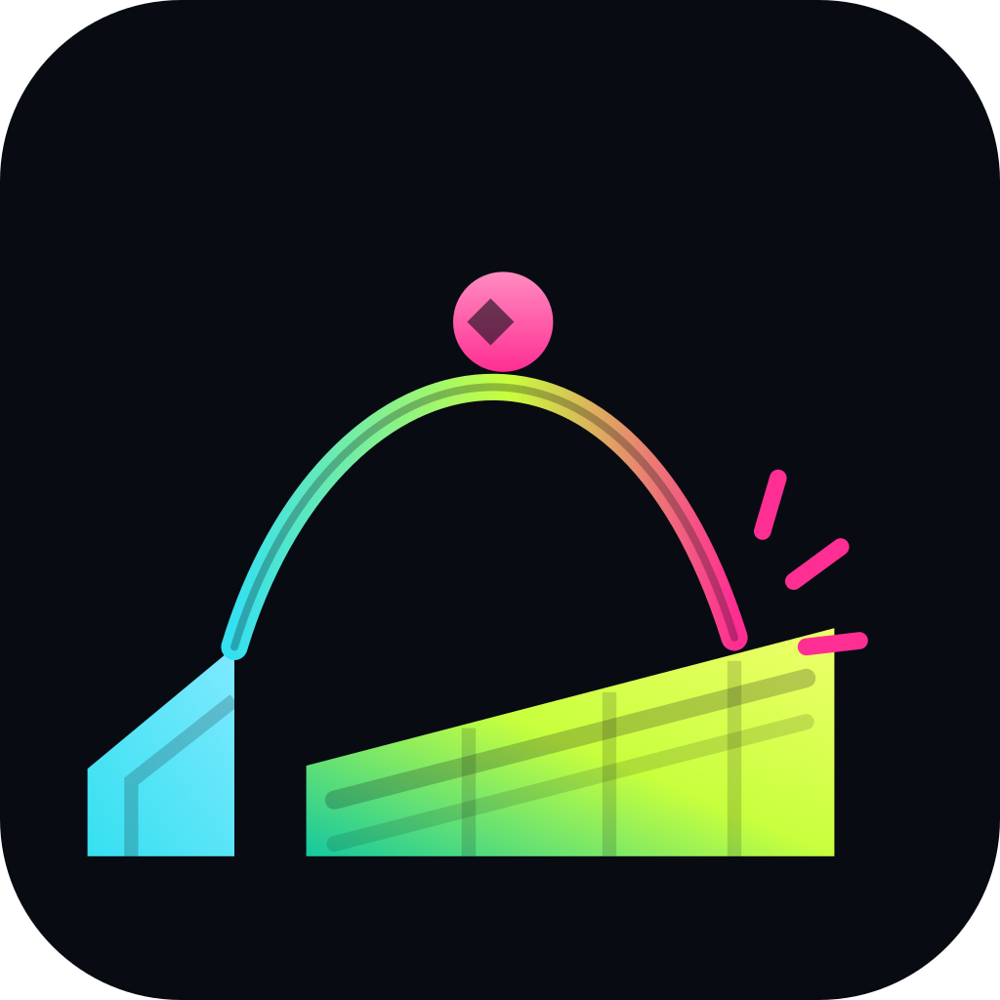
Znak (ikona)
SVG + PNG 1024 / 512 / 192 / 64 px
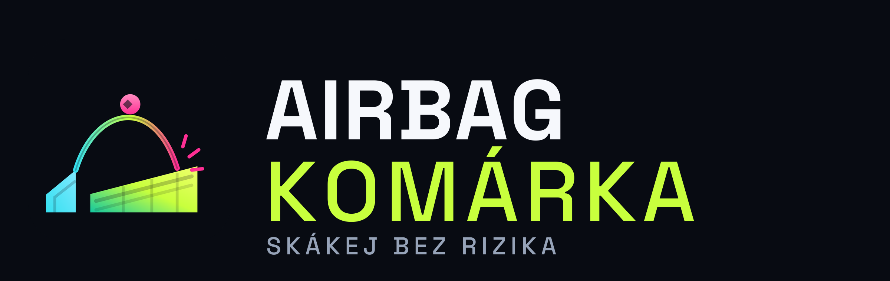
Logotyp (znak + název)
SVG (logo/airbag-komarka-logo.svg) + PNG 2400 × 760 px
Koncept — proč takové tvary a barvy
Význam symbolu
- Nájezdová hrana (tyrkysový klín) = místo, odkud se skáče. Malá plocha, jasný začátek.
- Trajektorie letu = oblouk od hrany k matraci; barva přechází z tyrkysové přes limetkovou do magenta, tedy „od startu k dopadu".
- Jezdec v apexu (magenta kruh s kosočtvercem) = okamžik, o který celá akce jde.
- Matrace (limetkový klín se švy) = dopadová plocha; švy naznačují komory nafukovací matrace, takže se to neplete s rampou.
- Impuls dopadu = tři krátké čárky; v malém provedení čitelné jako „prásk".
Barvy a písmo
- Limetková #C8FF3D = energie, „jde se do toho". Používá se i na plakátu pro tlačítka a ceny.
- Magenta #FF2E93 = akce, pohyb, riziko pod kontrolou (odpovídá růžovému potisku na matraci — drží se to reálného předmětu).
- Tyrkysová #35E0F0 = technika, hrana, bezpečnost.
- Tmavý podklad #080B12 = dostatek kontrastu pro malé provedení a pro tisk na tmavé triko.
- Písmo: Space Grotesk (stejné jako na webu i v HTML reportech) — v logotypu jsou křivky, takže se nikdy nerozbije.
Soubory a pravidla použití
| Soubor | Formát | Kde se používá |
|---|---|---|
logo/airbag-komarka-znak.svg | SVG, vektor | zdrojový soubor znaku, libovolné zvětšení pro tisk |
logo/airbag-komarka-znak-1024.png (a 512/192/64) | PNG s podkladem | profilovka, favicon, aplikace, samolepky |
logo/airbag-komarka-znak-bez-podkladu-1024.png | PNG, průhledné pozadí | na barevné plochy (limetková lišta, tyrkysové pozadí) |
logo/airbag-komarka-znak-mono.svg | SVG, jednobarevný | tisk na světlý podklad, gravírování, razítko, výšivka |
logo/airbag-komarka-logo.svg + -2400.png | SVG + PNG 2400 × 760 | plakát, roll-up, banner, hlavička dokumentů, sponzorské podklady |
- Ochranná zóna: kolem znaku nechat mezernu o velikosti šířky nájezdové hrany (u 512px znaku cca 60 px).
- Minimum: znak nikdy nezmenšovat pod 24 px výšky; v menším provedení použít jen profilovku s velkým znakem.
- Nepřekreslovat tvary, neměnit barvy ani proporce, nenatáčet znak. Na světlém podkladu použít mono verzi.
11 Harmonogram zveřejňování — den po dni
Konkrétní kalendářní data od dneška (23. 9. 2026) do dne akce (17. 10. 2026), včetně toho, kdo co dělá a co musí být hotové předem. Za akcí pokračuje vyhodnocení a plán dalších termínů.
Kdo je za co odpovědný
| Osoba | Role v akci | Konkrétně |
|---|---|---|
| Miroslav Brožek | majitel a schvalovatel | schvaluje termín, ceny, rozpočet a texty; komunikace s partnery a médii; rozhodnutí o počasí |
| Jarda Veselý ml. | technika a provoz | nájezdové hrany, dopadová zóna, kotvení, dmychadlo, kontrola matrace, obsluha |
| Dan Soudek | stavba a zázemí | příprava areálu, značení a navigace, cedule, rozvoz plakátů, materiál, občerstvení |
| Péťa a David | komunita a mládež | instruktoři u bloku 1, školy a spolky, oslovení oddílů, dohled nad dětmi |
| Dozor akce (jméno doplnit) | bezpečnost | vede provoz, kontroluje výbavu, vede provozní knihu, rozhoduje o zastavení provozu |
| GROWTH (agent) | kampaň a obsah | texty, vizuály, plán příspěvků, placená kampaň, vyhodnocení — publikaci provádí až po schválení |
Fáze 0 — příprava a schválení (21.–25. 9. 2026)
| Datum | Co se dělá / publikuje | Kanál | Čas | Kdo | Musí být hotové předem |
|---|---|---|---|---|---|
| po 21. 9. | Tento plán kampaně odevzdán majiteli k odsouhlasení (verze 1.0) | interní | — | GROWTH | — |
| st 23. 9. | Rozhodnutí majitele přijato (verze 1.1): varianta C bez zimního bloku, termín 17. 10. 2026, děti platí stejně jako dospělí, rozpočet jen na reklamu 6 000 Kč | interní | hotovo | majitel + CHIEF | — |
| čt 24. 9. | Rezervace areálu a termínu v kalendáři spolku; rozhodnutí o tisku (varianta A bez tisku / varianta B mini-tisk); zadání úprav aplikace pro DEV | interní | — | majitel, GROWTH → DEV | rozhodnutí o tisku |
| pá 25. 9. | Kontrola textů a vizuálů, korektura; příprava návrhu FB stránky; natáčení krátkého videa na tréninku | interní | — | GROWTH + Dan Soudek | schválené ceny a texty |
Fáze 1 — teaser (26.–27. 9. 2026)
| Datum | Co se publikuje | Kanál | Čas | Kdo | Musí být hotové předem |
|---|---|---|---|---|---|
| so 26. 9. | Teaser #1: fotografie airbagu + „Něco velkého se staví na Komárce. Zatím neřekneme co." | FB stránka + IG | 17:00 | majitel (publikace) / GROWTH (text) | hotový obrázek příspěvku, založená stránka |
| ne 27. 9. | Teaser #2: story s detailem matrace a textem „Datum zveřejníme v pondělí" | FB story + IG story | 18:00 | majitel / GROWTH | story obrázek 1080 × 1920 |
Fáze 2 — spuštění a registrace (28. 9. – 1. 10. 2026)
| Datum | Co se publikuje | Kanál | Čas | Kdo | Musí být hotové předem |
|---|---|---|---|---|---|
| po 28. 9. | Oznámení termínu: vytvoření FB události, spuštění webu akce, příspěvek s odkazem | FB událost + FB + IG + web | 17:00 | majitel / GROWTH | web na doméně, cover obrázek, text události |
| út 29. 9. | Otevření registrace: bloky v aplikaci s kapacitou 20; příspěvek „Registrace běží" | aplikace + FB + IG | 10:00 | DEV (nastavení) + majitel | úpravy aplikace z bodů 1–4 hotové |
| út 29. 9. | Rozvoz letáků do škol, bikeshopů a obchodů v Krupce a Teplicích (jen u varianty s tiskem) | tiskoviny | odpoledne | Dan Soudek | vytištěné letáky A5 — podmíněno rozhodnutím o tisku |
| st 30. 9. | Pozvánky školám a místním spolkům (e-mail + telefonicky školy) | e-mail / telefon | 9:00 | Péťa a David | text pozvánky, seznam kontaktů |
| čt 1. 10. | Tisková zpráva médiím: Teplický deník, Ústecký deník, MTBS.cz, Český rozhlas Sever | 9:00 | majitel (odeslání) / GROWTH (text) | schválená tisková zpráva, kontakty na média |
Fáze 3 — placená kampaň (2.–14. 10. 2026)
| Datum | Co se publikuje / nastavuje | Kanál | Čas | Kdo | Musí být hotové předem |
|---|---|---|---|---|---|
| pá 2. 10. | Start placené fáze 1 (povědomí, 1 500 Kč) — reklama na událost v okruhu 20 km | FB Ads | 12:00 | GROWTH (návrh) / majitel (spuštění) | schválený rozpočet, platební metoda na účtu |
| so 3. 10. | Vyhvěšení plakátů: areál Komárka, Krupka (nádraží, obchody), Teplice, Dubí, bikeshopy (jen u varianty s tiskem; jinak se plakát šíří digitálně) | tiskoviny | 10:00 | Dan Soudek | plakáty — podmíněno rozhodnutím o tisku |
| ne 4. 10. | Příspěvek z přípravy: fotky z areálu a z tréninku, „tak to vypadá na Komárce" | FB + IG | 17:00 | GROWTH (text) / majitel (fotky) | fotky z víkendu |
| po 5. 10. | Start placené fáze 2 (konverze, 3 000 Kč) — cílení na proklik na web | FB Ads | 10:00 | GROWTH / majitel | výsledky fáze 1, upravené publikum |
| út 6. 10. | Reel / příspěvek „Jak se zaregistrovat ve 4 krocích" (obrazovky aplikace) | FB + IG | 17:00 | GROWTH | natočené obrazovky aplikace |
| čt 8. 10. | Partnerský příspěvek: půjčení chráničů a přileb, výhody na akci | FB + IG | 12:00 | majitel (partner) / GROWTH | domluvené plnění s partnerem |
| pá 9. 10. | Příspěvek „Kdo se postará o bezpečnost" — dozor, instruktáž, pojištění, provozní řád | FB + IG | 17:00 | GROWTH | — |
| so 10. 10. | Interní zkušební provoz: kontrola matrace, úprava dopadové zóny, výměna hrany, nácvik rotace | areál | 9:00 | Jarda Veselý ml. + Dan Soudek | provozní řád a provozní kniha |
| ne 11. 10. | Příspěvek s reálným stavem přihlášených (kolik míst zbývá v kterém bloku) | FB + IG | 18:00 | GROWTH | aktuální data z aplikace |
| po 12. 10. | Poslední výzva #1 + start retargetingu lidí, kteří registraci nedokončili | FB + IG + FB Ads | 18:00 | GROWTH / majitel | vlastní publikum z webu (alespoň 1 000 lidí) |
Fáze 4 — poslední dny (14.–16. 10. 2026)
| Datum | Co se publikuje | Kanál | Čas | Kdo | Musí být hotové předem |
|---|---|---|---|---|---|
| st 14. 10. | Příspěvek „Co si vzít a co tě čeká" + harmonogram dne a doprava do areálu | FB + IG | 17:00 | GROWTH | potvrzené časy bloků |
| čt 15. 10. | Poslední výzva #2 — story s odpočtem + připomínka e-mailem přihlášeným (QR karta) | FB + IG story + e-mail | 18:00 | GROWTH / aplikace | funkční připomínky v aplikaci |
| pá 16. 10. | ROZHODNUTÍ O POČASÍ (pokud hrozí déšť nebo vítr nad 25 km/h → přesun na neděli 18. 10.); zveřejnění zprávy v události; příprava areálu a cedulí | FB událost + příspěvek | 18:00 | majitel + dozor akce | předpověď počasí, nachystané cedule a navigace |
Fáze 5 — den akce a po něm (17.–22. 10. 2026)
| Datum | Co se publikuje | Kanál | Čas | Kdo | Musí být hotové předem |
|---|---|---|---|---|---|
| so 17. 10. | DEN AKCE — live příspěvky: 9:00 otevření areálu · 11:00 z dopoledního bloku · 13:30 start Big air · 15:30 exhibice a soutěž o ceny · 17:00 poděkování a shrnutí dne | FB + IG story (5 příspěvků) | průběžně | pověřený člověk s mobilem (dle domluvy) | nabitý telefon, domluvený fotograf, ceny do soutěže |
| ne 18. 10. | Poděkování + fotoalbum + anketa v události; zpráva lidem, kteří se přihlásili a nedorazili | FB + e-mail | 17:00 | GROWTH | fotky z akce, export seznamu přihlášených |
| po 19. 10. | Vyhodnocení: data z aplikace (registrace, platby, zdroj), statistiky události a reklam; dotazník účastníkům | interní | — | GROWTH | přístup do statistik aplikace a reklam |
| út 20. 10. | Report majiteli (HTML) + rozhodnutí o dalším termínu 7. 11. 2026 | HTML výstup | — | GROWTH → CHIEF → majitel | uzavřená data z akce |
| st 21. 10. | Nabídka členství TJ Krupka účastníkům (e-mail + příspěvek) a poděkování dobrovolníkům | e-mail + FB | 17:00 | majitel / GROWTH | seznam účastníků |
| čt 22. 10. | Uzávěrka vyhodnocení kampaně a návrh rozpočtu na další akční den | interní | — | GROWTH | — |
Sezónní plán po akci (rámcově, k potvrzení)
| Termín | Režim | Poznámka |
|---|---|---|
| so 7. 11. 2026 | 2. akční den (podzimní uzávěrka) | náhradní termín pro 17. 10. a zároveň druhý pokus pro ty, kdo nestihli |
| so 24. 4. 2027 | Otevření letní sezóny 2027 | start pravidelného víkendového provozu |
| 8. 5. · 5. 6. · 3. 7. · 14. 8. · 11. 9. 2027 | Letní série akčních dnů | 5 termínů, každý s vlastním tématem (např. „dívčí dirt den", „koloběžkový den") |
| so 9. 10. 2027 | Podzimní akční den a vyhlášení sezony | vyhodnocení roku, odměny pro nejaktivnější jezdce |
12 Vyhodnocení — co měřit a podle čeho poznáme úspěch
Akce je úspěšná, když se zaplatí, přivede nové jezdce a nikdo se vážně nezraní. Následující metriky jsou nastavené tak, aby se daly změřit bez dodatečných nákladů — z aplikace, z Facebooku a z místa.
Cíle (KPI) a kde se měří
| Metrika | Cíl | Kde se měří | Splněno = |
|---|---|---|---|
| Rezervace předem | 40 (2 × 20 míst) | app.tjkrupka.cz — události a kapacity | ≥ 30 |
| Platící účastníci na místě | 50–90 | QR kontrola v aplikaci + vydané pásky | ≥ 45 |
| Diváci a doprovod | 60–120 | ruční počítadlo u vstupu | ≥ 60 |
| Výnos ze vstupů | 24 750–44 550 Kč | platby v aplikaci + hotovost | ≥ 22 000 Kč |
| Náklady akce | ≤ 25 000 Kč | účetnictví spolku | ≤ 25 000 Kč |
| Náklad na jednoho platícího | ≤ 120 Kč | náklady / platící (z reklamy 6 000 Kč) | ≤ 150 Kč |
| Konverze z webu do registrace | 3–5 % | návštěvy webu vs. dokončené registrace | ≥ 2 % |
| Cena za proklik (FB) | ≤ 8 Kč | Ads Manager | ≤ 10 Kč |
| Noví členové TJ Krupka | 15–30 | členská evidence v aplikaci | ≥ 10 |
| Vážná zranění | 0 | provozní kniha, záznam o úrazu | 0 vážných |
| Sledující FB stránky | 200–400 | statistiky stránky | ≥ 150 |
| Účast z pozvánek škol a spolků | 10–25 osob | anketa u registrace | ≥ 8 osob |
Ekonomika dne akce — náklady vs. výnos (v Kč)
Rozpočet akce (návrh k odsouhlasení)
| Položka | Odhad Kč | Poznámka |
|---|---|---|
| Placená reklama (Facebook 3 fáze) | 6 000 | schváleno majitelem 23. 9. 2026 — hlavní nástroj na registrace předem |
| Tisk: plakáty A2 (10) + A3 (30), letáky A5 (500), cedule (3), roll-up | 0 | rozpočet 10 000 Kč neschválen. Varianta A = bez tisku (0 Kč). Varianta B = mini-tisk 20× A3 + 100× A5, odhad 300–600 Kč (ceny ověřit u tiskárny), k rozhodnutí majitele. |
| Odměny dobrovolníkům (3 osoby × 500 Kč) | 1 500 | náhrada výdajů; při placeném dozoru 4 800 Kč |
| Elektřina (dmychadlo 1,6 kW × 8 h) | 83 | 6,5 Kč/kWh |
| Materiál: pásky, značení, spotřeba, doplňky lékárničky | 400 | — |
| Ceny do soutěže (nejlepší skok, nejmladší jezdec) | 2 000 | možné řešit věcným plněním partnera |
| Pojištění jednorázové akce pro veřejnost | 2 500 | odhad, nutno ověřit u pojistitele |
| Celkem akce | 12 483 | bez kapitálových nákladů na airbag a nájezdy; s mini-tiskem 12 783–13 083 Kč |
Rizika a jak je řešit
| Riziko | Pravděpodobnost | Dopad | Řešení |
|---|---|---|---|
| Déšť, mokrá matrace, silný vítr | střední | vysoký | náhradní termín 18. 10. + druhá varianta 7. 11.; rozhodnutí v pá 16. 10. v 18:00; pravidlo zastavení provozu nad 25 km/h |
| Úraz účastníka | střední | kritický | dozor 3 osoby, povinná výbava, instruktáž, lékárnička, pojištění odpovědnosti (limit 20–50 mil. Kč), provozní kniha, jasný postup u úrazu |
| Malá účast | střední | vysoký | rozpočet rozdělený do 3 fází (lze přesunout), pozvánky školám a spolkům, dva bloky pro různé skupiny, diváci zdarma |
| Nefunkční registrace / výpadek aplikace | střední | vysoký | 10 bodů úprav aplikace, zkušební registrace 14 dní předem, papírový seznam jako záloha, možnost registrace na místě |
| Slabý signál v areálu | vysoká | střední | offline režim QR kontroly (požadavek na DEV) + vytištěný seznam přihlášených |
| Právní režim vstupu pro veřejnost | nízká | vysoký | posouzení přes LEGAL před otevřením registrace; členský model a jednorázový vstup podle nastavení v aplikaci |
| Tisk není v rozpočtu → menší zásah v místě | vysoká | střední | varianta bez tisku stojí na FB a na přímém oslovení škol a spolků (e-mail, telefon, skupiny); plakát se šíří digitálně a v A4 na spolkové tiskárně; mini-tisk do 600 Kč k rozhodnutí majitele |
| Kolize s jinou akcí v regionu | střední | střední | ověřit kalendář města Krupka a Teplice před potvrzením termínu (kontrola do 23. 9.) |
13 Co je potřeba odsouhlasit nebo dodat
Nic z tohoto materiálu není publikované, odeslané ani zaplacené. Následující seznam je zadání pro majitele — bez těchto rozhodnutí nelze kampaň spustit.
| # | Co je potřeba odsouhlasit / dodat | K čemu to je | Termín |
|---|---|---|---|
| 1 | Termín akce — hlavní so 17. 10. 2026, náhrada ne 18. 10., druhá varianta so 7. 11. 2026 | bez potvrzeného termínu nelze vytvořit FB událost ani otevřít registraci | potvrzeno 23. 9. |
| 2 | Název AIRBAG KOMÁRKA a claim „SKÁKEJ BEZ RIZIKA" | název jde na plakát, do události, na web i do domény | čeká na potvrzení |
| 3 | Varianta C — kombinace disciplín, dva nájezdy, bez inline a skateboardu, bez zimního bloku | určuje celý program dne a bezpečnostní režim | potvrzeno 23. 9. — bez zimy |
| 4 | Ceny — člen 300 / nečlen 600 / dítě a mládež stejně jako dospělí / divák zdarma. Otevřené: schválit, nebo zrušit akční slevu 250 / 450 Kč | ceny musí být v souladu s aplikací, jinak vznikne rozpor na místě | rozpor v cenách — dvě různé odpovědi, viz sekce 14 |
| 5 | Rozpočet na placenou reklamu 6 000 Kč (3 fáze) a potvrzení, kdo spouští reklamu a z jakého účtu | bez rozpočtu není placená část kampaně; účet musí být nastavený | schváleno 23. 9. · účet k doplnění |
| 6 | Tisk — rozpočet 10 000 Kč nebyl schválen; k rozhodnutí varianta A (bez tisku, 0 Kč) nebo varianta B (mini-tisk, odhad 300–600 Kč) | bez tisku je menší zásah v místě; varianta A funguje bez peněz, varianta B stojí jednotky stovek | do 25. 9. |
| 7 | Vlastní FB stránka AIRBAG KOMÁRKA (nebo vedení akce pod stávající stránkou TJ Krupka) + kdo má přístup a kdo publikuje | bez toho nelze spustit událost, reklamu ani měřit dosah | 25. 9. |
| 8 | Schválení textů a vizuálů (plakát, leták, cedule, roll-up, tisková zpráva, pozvánky školám a spolkům, příspěvky) | publikace je privilegovaná akce — odesílá se až po odsouhlasení | průběžně |
| 9 | Fotky areálu, svahu a jezdců + logo TJ Krupka v křivkách + loga partnerů | vizuály jsou připravené, ale bez lokálních fotek nebudou působit místně | 25. 9. |
| 10 | Oslovení partnerů (Decathlon a další) a potvrzení, jaká plnění smíme nabídnout | v materiálech je Decathlon veden jako partner projektu — potřebuji potvrzení, zda je dohoda aktivní | 30. 9. |
| 11 | Údaje z návodu k použití airbagu — hmotnostní limit jezdce, maximální doporučený skok, tlak dmychadla, hmotnost matrace | bez hmotnostního limitu nelze bezpečně pustit dospělé jezdce | do 10. 10. |
| 12 | Potvrzení potisku na matraci — na fotografii z výroby je potisk „Sudety Culture"; potřebuji vědět, zda jde o partnera, brand spolku, nebo se potisk mění | ovlivňuje logo akce, plakáty a komunikaci směrem k veřejnosti i partnerům | 25. 9. |
| 13 | Pojištění — kopie smlouvy o odpovědnosti spolku (limit, rozsah) + rozhodnutí o jednorázovém pojištění akce pro veřejnost | krytí nečlenů na jednorázové akci je klíčové pro odpovědnost spolku | do 10. 10. |
| 14 | Právní posouzení prodeje vstupu veřejnosti (živnostenský režim vs. hlavní činnost spolku) | může změnit model (jen členové vs. veřejnost) — pak se mění i ceny a texty | před registrací |
| 15 | Úpravy aplikace (10 bodů v sekci Registrace) — zejména sjednocení cen a zdroj registrace. Zadání je hotové: prompt pro úpravu app.tjkrupka.cz — akce je v něm data, ne kód, takže aplikace unese i další akce spolku a umí informovat členy o událostech | bez sjednocení cen uvidí lidé jinou cenu než na plakátu | 23.–29. 9. |
| 16 | Nasazení webu na airbag.tjkrupka.cz nebo tjkrupka.cz/airbag | web akce musí mít veřejnou adresu, aby na něj šla reklama | 28. 9. |
| 17 | Lidé na den D — jméno dozoru akce (vedoucí provozu), zdravotník, 2 instruktoři, člověk na fotky a příspěvky | bez dozoru se matrace nesmí provozovat | 10. 10. |
| 18 | Potvrzení, že Datum akce nekoliduje s akcemi města Krupka a Teplice | kolize snižuje účast i mediální prostor | 23. 9. |
| 19 | Pokyn „spouštěj“ — potvrzení runbooku v sekci 15 (FB stránka, událost, web, registrace, reklama) | bez pokynu zůstává všechno připravené a nespouštěné | dle majitele |
Zdroje a metodika — odkud data pochází
Měřená data (ne odhady)
- app.tjkrupka.cz — veřejné API aplikace ověřeno 21. 9. 2026: produkt „Jednorázový vstup — AIRBAG" (platnost 4 h, cena pro člena 300 Kč, pro veřejnost 600 Kč), zařízení „Dopadová matrace", existující události s kapacitami (12 / 8 / 20), dokumenty se souhlasem (vzdání se práva, čestné prohlášení, souhlas zákonného zástupce, verze 1), členství 200 Kč, platební brána v ostrém provozu.
- Počty obyvatel (město Krupka 12 793, město Teplice 46 477, okres Teplice 127 739, Ústecký kraj 808 356) — ČSÚ, stav k 1. 1. 2025.
- Cena airbagu 100 000 Kč, rozměry 10 × 5 × 2 m, dodací adresa — zadání objednávky dodavateli v podkladech projektu.
- Fotografie airbagu s potiskem — výrobní foto (výrobní foto airbagu s potiskem).
- Provozní a právní rámec — podklady projektu airbag: provozní řád, cenová politika, členský koncept, právní rozbor (§ 2900, 2910, 2924, 2925 OZ; živnostenský zákon).
- Srovnatelná praxe — HEIPARK Tošovice provozuje airbag se dvěma velikostmi skoků (airbag jump) a pumptrack; potvrzuje, že formát „dvě hrany pro různé úrovně" je v ČR provozovatelný.
Odhady (označené, s postupem)
- Průměrná útrata 495 Kč / platící = 0,35 × 300 + 0,65 × 600 (mix člen / nečlen; děti a mládež platí stejně jako dospělí — rozhodnutí majitele 23. 9. 2026). Kdyby se schválila akční sleva 250 / 450 Kč, průměr klesne na 380 Kč a break-even stoupne na 21 platících při dobrovolnickém dozoru.
- Náklady na den: elektřina 1,6 kW × 8 h × 6,5 Kč = 83 Kč; personál 3 osoby (dobrovolníci 500 Kč/den, placený dozor 200 Kč/h); materiál 400 Kč; propagace = celá schválená kampaň 6 000 Kč k akčnímu dni, 800 Kč u běžného dne.
- Nájezdy 45 000 Kč a zázemí 15 000 Kč — kvalifikovaný odhad, nutno ověřit podle terénu a konstrukce.
- CPC 5–8 Kč, CPM 80–120 Kč, CTR 1,0–1,5 % — vychází z veřejných českých zdrojů pro rok 2025 (uvádějí 2–8 Kč u běžných kampaní, 12–16 Kč u kampaní na návštěvnost); použit je střední odhad pro lokální sportovní akci.
- Návštěvnost a počet aktivních skokanů v regionu — odhad 150–400 osob; podloženo existencí trailparku, reálných MTB tréninků v aplikaci a provozem srovnatelného areálu. Přesné číslo v ČR nikdo nevede.
14 Protokol rozhodnutí majitele a stav schválení
Záznam toho, co majitel k 24. 9. 2026 odsouhlasil, co ještě chybí a kde je rozpor. Bez tohoto záznamu se nedá spustit nic ven — publikace je privilegovaná akce.
Odpověď A — 23. 9. 2026, 21:58
- Varianta: „nechápu, proč tam pleteš zimní blok tedka. chci C - BEZ ZIMY.“
- Termín: Ano, 17. 10. 2026.
- Ceny: „u dětí platí to stejné jako u dospělých ohledně ceny. dítě člen - 300 Kč, dítě nečlen - 600 Kč. cena za rodinu nechápu, divák zdarma.“
- Rozpočet: jen placená reklama 6 000 Kč, tisk ne.
Odpověď B — 24. 9. 2026, 1:16
- Varianta: Ano, varianta C.
- Termín: Ano, 17. 10. 2026.
- Ceny: „Ano, tyto ceny“ — v nabídce bylo: člen 300 Kč, návštěvník 600 Kč, dítě 300 Kč, rodina 1 300 Kč, divák zdarma.
- Rozpočet: jen placená reklama 6 000 Kč, tisk ne.
Odpověď B vznikla na původní, už nahrazený dotaz. Proto se v cenách rozchází s odpovědí A, která byla odpovědí na dotaz novější a obsahovala i písemné upřesnění.
| Varianta | Ceny | Co to znamená prakticky |
|---|---|---|
| 1 — podle odpovědi A zapracováno v materiálech |
člen 300 Kč · nečlen 600 Kč · dítě a mládež stejně jako dospělí (člen 300 / nečlen 600) · divák zdarma · bez rodinného balíčku | Odpovídá tomu, co je dnes nastavené v app.tjkrupka.cz (produkt airbag_day: člen 300 Kč, veřejnost 600 Kč). Nemění se žádný materiál ani aplikace. Průměrná útrata na platícího 495 Kč, break-even akčního dne 17 platících. |
| 2 — podle odpovědi B vyžaduje přepis |
člen 300 Kč · nečlen 600 Kč · dítě 300 Kč jednotně (i nečlen) · rodinný balíček 1 300 Kč (2 dospělí + 2 děti) · divák zdarma | Vyžaduje úpravu aplikace (nová varianta pro dítě-nečlena + nový produkt rodinný balíček) a přepis ceníku na plakátu, letáku, webu, FB, plakátu na místě i v promptu pro DEV. Odhad dopadu: průměrná útrata 495 → cca 440–465 Kč (děti tvoří 25–30 % platících, z toho ~60 % nečlenů; rozdíl 300 Kč × 18 % = 54 Kč dolů), break-even akčního dne 17 → 18–19 platících. Odhad, ne měření. |
Proč to nechávám otevřené: nechci si domýšlet cenu, která jde na plakát a do aplikace. Špatná cena znamená rozpor na místě při placení a nutnost měnit tiskoviny i aplikaci. Materiály jsou připravené ve variantě 1 (podle odpovědi A) — pokud má platit varianta 2, je to práce navíc pro DEV i pro texty.
Stav schválení k 24. 9. 2026
| # | Rozhodnutí | Stav | Poznámka |
|---|---|---|---|
| 1 | Varianta C jako základ programu | schváleno | obě odpovědi shodně; bez zimního bloku |
| 2 | Termín so 17. 10. 2026 (+ náhrada ne 18. 10.) | schváleno | druhá varianta 7. 11. 2026 zůstává v záloze |
| 3 | Ceny dětí a rodinný balíček | rozpor | odpověď A vs. odpověď B — nutné jedno finální rozhodnutí |
| 4 | Rozpočet na placenou reklamu 6 000 Kč | schváleno | tisk 10 000 Kč neschválen; reklamu spouští až po nastavení účtu |
| 5 | Název AIRBAG KOMÁRKA a claim „SKÁKEJ BEZ RIZIKA“ | čeká | název je použit ve všech materiálech i v adresářích |
| 6 | Režim tisku — A bez tisku (0 Kč) / B mini-tisk | čeká | rozhodnutí do 25. 9. 2026, jinak platí režim A |
| 7 | Vlastní FB stránka vs. akce pod TJ Krupka + kdo publikuje | čeká | blokuje spuštění události i reklamy |
| 8 | Fotky areálu, logo TJ v křivkách, loga partnerů | čeká | vizuály jsou hotové, chybí místní fotky |
| 9 | Mandát oslovit partnery (Decathlon) a co jim nabídnout | čeká | nabídka partnerství je připravená v podkladech |
| 10 | Údaje z návodu k airbagu (hmotnostní limit, tlak, max. skok) | čeká | bez hmotnostního limitu nelze pustit dospělé jezdce |
| 11 | Potvrzení potisku matrace („Sudety Culture“) | čeká | ovlivňuje logo akce a komunikaci k partnerům |
| 12 | Aplikace app.tjkrupka.cz — sjednocení cen + zdroj registrace | čeká | zadání pro DEV je hotové, čeká na finální ceny a schválení |
| 13 | Pojištění, právní posouzení prodeje vstupu veřejnosti | čeká | může změnit model (jen členové vs. veřejnost) |
| 14 | Lidé na den D (dozor, zdravotník, instruktoři, fotky) | čeká | bez dozoru se matrace neprovozuje |
Co je hotové a leží na disku
Deliverables (skutečné soubory)
index.html— tato stránka s celou kampaní (13 sekcí + protokol a spouštěcí balíček)web/index.html— jednostránkový web akce s hotovým copy a CTA na registraciobrazky/— 11 souborů: plakát A3 3508×4961, leták A5 1748×2480, FB cover 1920×1005, FB post 1200×630, IG čtverec 1080×1080, IG story 1080×1920, profilovka 1080×1080, QR na registraci, foto airbagu, mapa areálu, logo trailparkulogo/— 10 souborů: 4× SVG (logotyp, znak, znak bez podkladu, mono) + 6× PNG export (2400, 1024, 512, 192, 64 px)podklady/— 8 souborů k copy-paste: 31 hlášek podle fází, textace tiskovin, tisková zpráva, pozvánka školám, pozvánka spolkům, nabídka partnerům, protokol rozhodnutí, spouštěcí balíčekprompt-app-tjkrupka.md+prompt-app-tjkrupka.html— zadání pro DEV (obecný modul akcí v aplikaci, 10 bodů)zdroje/— generátory vizuálů a skripty, kterými se dají materiály znovu vyrobit
Co se záměrně nestalo
- Žádný příspěvek, žádná FB stránka ani událost, žádný e-mail, žádná zpráva.
- Žádné nasazení webu na veřejnou adresu a žádná placená reklama — neutracena ani koruna.
- Žádný soubor mimo složku kampaně.
- Žádné vymyšlené číslo: kde nejsou data, je v textu výslovně označený odhad s postupem výpočtu.
15 Spouštěcí balíček — co přesně se stane po odsouhlasení
Runbook pro den, kdy majitel řekne „jeď“. Každý krok je privilegovaná akce, která má svého vlastníka a podmínku, bez které se nespouští. Vše ostatní je hotové a čeká na disku.
| # | Krok (privilegovaná akce) | Kdo to provede | Co musí být schváleno předem | Připraveno |
|---|---|---|---|---|
| 1 | Založit FB stránku AIRBAG KOMÁRKA — název, kategorie, popis, uživatelské jméno, profilovka, titulní fotka, prvních 5 příspěvků | majitel nebo pověřená osoba vlastnící účet | rozhodnutí vlastní stránka vs. akce pod TJ Krupka; kdo publikuje | texty + profilovka + cover |
| 2 | Vytvořit FB událost — název, popis, místo, čas, cover; pozvat školy, spolky a komunitu | majitel / správce stránky | potvrzený termín, název a režim stránky | cover 1920×1005, popis události |
| 3 | Nasazení webu akce na veřejnou adresu (airbag.tjkrupka.cz nebo tjkrupka.cz/airbag) | DEV (technická změna, ne GROWTH) | schválení textů a domény | web/index.html hotový |
| 4 | Tisk nebo režim bez tisku: A) nic se netiskne, jen vlastní tiskárna a digitál (0 Kč) · B) mini-tisk 20× A3 + 100× A5 v copy centru (odhad 300–600 Kč) | Dan Soudek / majitel | rozhodnutí o tisku (varianta A nebo B) | plakát, leták, cedule, roll-up jako 300 dpi PNG + textace |
| 5 | Úpravy aplikace app.tjkrupka.cz: sjednocení cen, produkt pro akci, zdroj registrace, souhlasy, informování členů | DEV podle zadání | finální ceny (rozpor v sekci 14) a schválení zadání | prompt-app-tjkrupka.md (10 bodů + akceptační kritéria) |
| 6 | Otevření registrace a zveřejnění odkazu (FB, web, školy, spolky) | majitel / GROWTH po schválení | aplikace připravená + schválené texty a ceny | QR na registraci, texty hlášek fáze 2 |
| 7 | Kontrola placení na místě — jak se prokazuje zaplacení (QR v aplikaci), doplatek, storna | registrace na místě (Péťa a David) | ceny sjednocené s aplikací | postup je v sekci 04, čeká na finální ceny |
| 8 | Placená FB reklama 6 000 Kč ve 3 fázích (teaser / konverze / retargeting) včetně cílení a denních limitů | majitel z vlastního reklamního účtu; GROWTH připraví kampaně | schválený rozpočet (hotovo), nastavený účet, schválené texty a vizuály | cílení, publika, rozpočet a fáze v sekci 08 |
| 9 | Rozeslání pozvánky školám (e-mailem, s nabídkou vyhrazeného bloku) | majitel ze svého e-mailu | schválení textu; dohoda na jménu odesílatele | podklady/04-pozvanka-skoly.md |
| 10 | Pozvánky spolkům a oslovení partnerů (Decathlon a další) včetně nabídky plnění | majitel (jednání), GROWTH (podklady) | mandát oslovit partnery a potvrzení, co smíme nabídnout | podklady/05-pozvanka-spolky.md, 06-partneri-a-sponzori.md |
| 11 | Tisková zpráva médiím (Krupka, Teplice, regionální sport) | majitel / GROWTH po schválení | schválení textu + kontakt pro média | podklady/03-tiskova-zprava.md (kontakt k doplnění) |
| 12 | Den D — provoz: registrace na místě, dozor, live příspěvky, fotky | dozor akce, Jarda Veselý ml., Péťa, David | jmenovaný dozor, pojištění, bezpečnostní režim | harmonogram dne, cedule, provozní řád v promptu |
| 13 | Po akci: poděkování (hlášky 26–31), vyhodnocení metrik, rozhodnutí o dalším akčním dni | GROWTH (vyhodnocení), majitel (další termín) | nic — akce je veřejná | sada metrik v sekci 12, hlášky 26–31 |